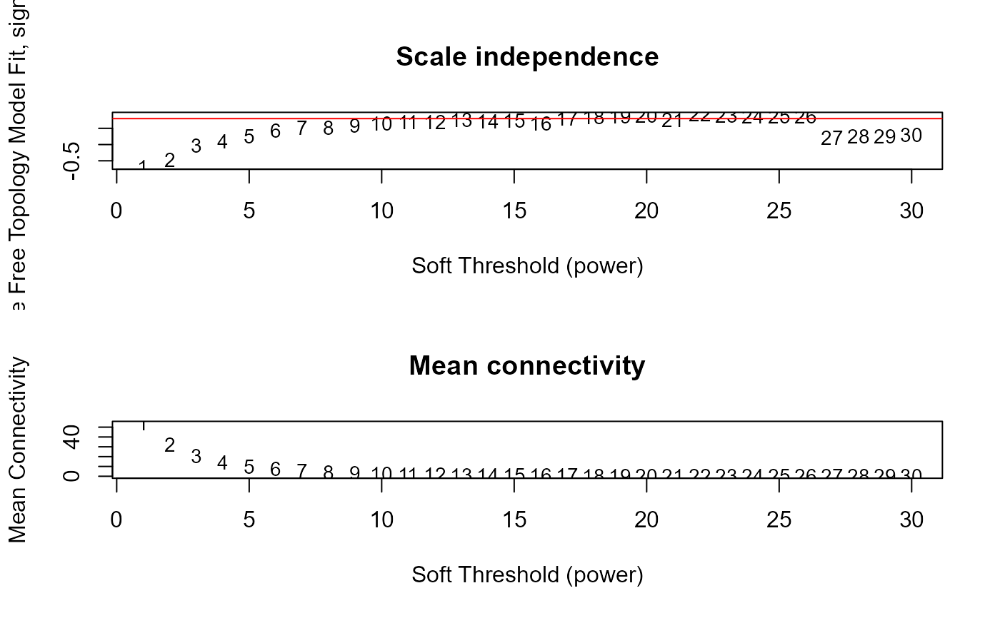

Prepare input data for WGCNA (format, QC), then choose the appropriate soft thresholding power for network construction, by analysing scale free topology with different soft thresholding powers.
Usage
prepare_WGCNA(
se_obj,
assay = 2,
networkType = "signed",
RsquaredCut = 0.8,
MeanConnectivity = 100,
powers = NULL,
...
)Arguments
- se_obj
A SummarizedExperiment object. Data normalised to time point 0 can be in the second assay slot, created by
normalise_to_start(). Features can be pre-filtered, e.g. by residual variance calculated bydecomp_variance(), to remove noisy features before running WGCNA.- assay
Which assay slot of the SummarizedExperiment object to use for WGCNA input (default is 2, which is where the time 0 normalised data is stored by
normalise_to_start())- networkType
(Optional) Parameter of
WGCNA::pickSoftThreshold()(default is "signed")- RsquaredCut
(Optional) Parameter of
WGCNA::pickSoftThreshold()(default is 0.8)- MeanConnectivity
(Optional) Line of mean connectivity (default is 100)
- powers
(Optional) Parameter of
WGCNA::pickSoftThreshold()(default isc(seq(1, 10, by = 1), seq(12, 20, by = 2)))- ...
Additional parameters to be passed to
WGCNA::pickSoftThreshold()
Value
A list containing results of the scale-free topology
fit indices with different powers, suggested power, network type and prepared
input data used for reuse in run_WGCNA()
Examples
data("example")
example_obj <- normalise_to_start(example_obj)
wgcna_input <- prepare_WGCNA(example_obj, assay = 2, powers = seq(1, 30),
networkType = "signed", RsquaredCut = 0.8)
#> Allowing multi-threading with up to 24 threads.
#> ..Excluding 3 genes from the calculation due to too many missing samples or zero variance.
#> ..Excluding 3 genes from the calculation due to too many missing samples or zero variance.
#> pickSoftThreshold: will use block size 97.
#> pickSoftThreshold: calculating connectivity for given powers...
#> ..working on genes 1 through 97 of 97
#> Power SFT.R.sq slope truncated.R.sq mean.k. median.k. max.k.
#> 1 1 0.6960 4.190 0.6490 53.800 55.6000 62.70
#> 2 2 0.4770 1.190 0.5190 32.600 33.9000 44.10
#> 3 3 0.0269 0.140 0.0443 21.000 21.5000 32.50
#> 4 4 0.0963 -0.310 -0.0953 14.200 14.1000 24.80
#> 5 5 0.2580 -0.363 0.2340 9.980 9.7800 19.40
#> 6 6 0.4340 -0.443 0.5110 7.250 6.9600 15.50
#> 7 7 0.5130 -0.486 0.7030 5.420 4.9400 12.60
#> 8 8 0.5260 -0.581 0.6970 4.140 3.6300 10.30
#> 9 9 0.5780 -0.604 0.7460 3.230 2.7900 8.58
#> 10 10 0.6540 -0.653 0.8050 2.550 2.1900 7.19
#> 11 11 0.7030 -0.632 0.9220 2.050 1.6500 6.07
#> 12 12 0.6990 -0.703 0.8440 1.670 1.4400 5.16
#> 13 13 0.7590 -0.703 0.8830 1.370 1.1400 4.42
#> 14 14 0.7160 -0.681 0.8240 1.140 0.9050 3.80
#> 15 15 0.7360 -0.687 0.8170 0.950 0.7030 3.28
#> 16 16 0.6550 -0.817 0.6610 0.802 0.5490 2.85
#> 17 17 0.8150 -0.853 0.8380 0.681 0.4300 2.48
#> 18 18 0.8510 -0.840 0.8880 0.583 0.3570 2.17
#> 19 19 0.8730 -0.859 0.8760 0.502 0.3060 1.90
#> 20 20 0.8910 -0.823 0.8820 0.435 0.2630 1.67
#> 21 21 0.7560 -0.862 0.6910 0.379 0.2260 1.48
#> 22 22 0.9280 -0.816 0.9070 0.332 0.1960 1.30
#> 23 23 0.8990 -0.810 0.8710 0.292 0.1690 1.16
#> 24 24 0.8620 -0.807 0.8310 0.258 0.1450 1.04
#> 25 25 0.8640 -0.834 0.8270 0.229 0.1270 1.01
#> 26 26 0.8730 -0.938 0.8470 0.205 0.1040 1.00
#> 27 27 0.2010 -2.460 0.0707 0.184 0.0866 1.00
#> 28 28 0.2520 -3.640 0.1560 0.165 0.0711 1.00
#> 29 29 0.2630 -3.590 0.1660 0.149 0.0584 1.00
#> 30 30 0.3080 -4.560 0.1940 0.135 0.0507 1.00

wgcna_input$fitIndices
#> Power SFT.R.sq slope truncated.R.sq mean.k. median.k. max.k.
#> 1 1 0.69613665 4.1865310 0.64945282 53.7585203 55.62561830 62.731732
#> 2 2 0.47655276 1.1861802 0.51932643 32.5538385 33.88478800 44.074806
#> 3 3 0.02693887 0.1404819 0.04431503 20.9594294 21.47265688 32.503023
#> 4 4 0.09634555 -0.3095089 -0.09534426 14.1739971 14.10139349 24.802197
#> 5 5 0.25797136 -0.3625834 0.23448424 9.9754635 9.77633931 19.413145
#> 6 6 0.43378804 -0.4427611 0.51060007 7.2539689 6.95502890 15.497738
#> 7 7 0.51284973 -0.4863361 0.70302618 5.4194754 4.93966874 12.568845
#> 8 8 0.52577799 -0.5806811 0.69650409 4.1412810 3.63172730 10.326077
#> 9 9 0.57763561 -0.6040660 0.74616010 3.2253425 2.79147993 8.575454
#> 10 10 0.65415150 -0.6528454 0.80485416 2.5531197 2.19455870 7.186954
#> 11 11 0.70342141 -0.6322812 0.92208417 2.0495686 1.65154355 6.070678
#> 12 12 0.69938515 -0.7034682 0.84365359 1.6656573 1.43507424 5.162813
#> 13 13 0.75873460 -0.7025467 0.88336843 1.3684430 1.14206328 4.417021
#> 14 14 0.71606408 -0.6809841 0.82418466 1.1352394 0.90513016 3.798991
#> 15 15 0.73594178 -0.6873870 0.81695840 0.9500791 0.70323972 3.282873
#> 16 16 0.65504157 -0.8170121 0.66144343 0.8015050 0.54867952 2.848903
#> 17 17 0.81501390 -0.8525252 0.83830600 0.6811539 0.42971725 2.481762
#> 18 18 0.85122656 -0.8396477 0.88812958 0.5828270 0.35738660 2.169440
#> 19 19 0.87261201 -0.8587925 0.87588980 0.5018668 0.30600664 1.902423
#> 20 20 0.89102883 -0.8231234 0.88170934 0.4347305 0.26286396 1.673097
#> 21 21 0.75587972 -0.8622775 0.69058460 0.3786926 0.22643764 1.475322
#> 22 22 0.92771133 -0.8161452 0.90717797 0.3316355 0.19553427 1.304108
#> 23 23 0.89948084 -0.8104305 0.87088407 0.2918984 0.16920675 1.155366
#> 24 24 0.86193357 -0.8074687 0.83146885 0.2581677 0.14453391 1.036132
#> 25 25 0.86409597 -0.8336862 0.82685662 0.2293962 0.12689879 1.005608
#> 26 26 0.87312080 -0.9377683 0.84734366 0.2047430 0.10433481 1.004144
#> 27 27 0.20086206 -2.4605883 0.07072460 0.1835285 0.08664495 1.003074
#> 28 28 0.25205572 -3.6432852 0.15638707 0.1651994 0.07107316 1.002288
#> 29 29 0.26336019 -3.5944098 0.16644777 0.1493035 0.05843663 1.001709
#> 30 30 0.30801526 -4.5608784 0.19417760 0.1354684 0.05066301 1.001281
picked_power <- wgcna_input$powerEstimate
# example_net <- run_WGCNA(wgcna_input,
# power = picked_power,
# minModuleSize = 10, # only 100 genes in the example data
# numericLabels = TRUE)
# plot_WGCNA(example_net, fontsize = 8)